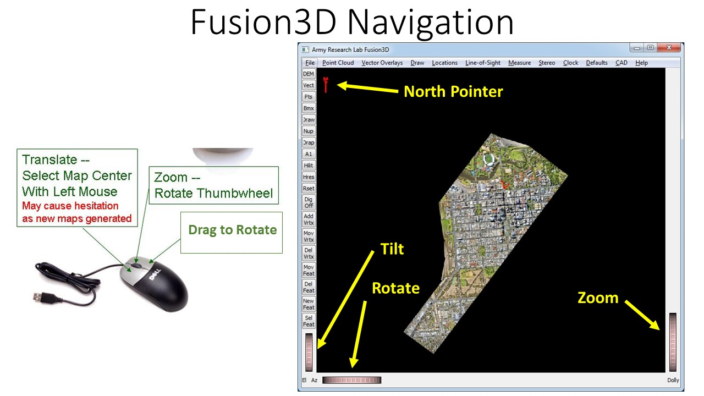
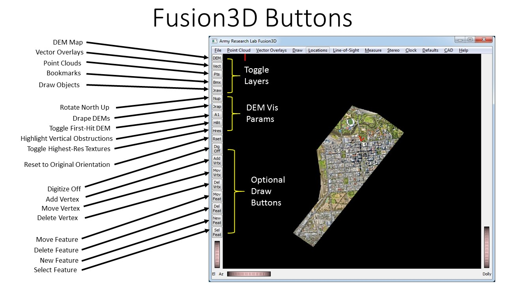

This document is at the head of an HTML tree of documents and should be available from the Help Menu on the viewer. Contact information for the author of the viewer and this documentation, Dr. John F. (Jeff) Dammann, is is given below.
The viewer is optimized for DSMs and orthophotos produced by the BuckEye Program. However, it also works well for HALOE and ALIRT DSMs and for commercial lidar and photogramatic maps as well. The resolution of the BuckEye map data is typically 1 meter or less often 0.5 meter. The data is very high quality with little noise and very few artifacts. Sometimes there appear to be points hanging in space, but almost always they are from a real object like a light pole or tower that can only be sparsely sampled at this resolution. The maps are very carefully georegistered -- BuckEye claims to within 0.5 m in Northing and Easting and to within 0.3 m in elevation. This should be very useful for providing very accurate location information for any point selected on the map. Commercial lidar maps are of comparable quality depending on the purpose of the data collection. Photogrametric maps are typically somewhat lower in quality but cheaper to make and available for some areas where ladar data collections are not possible.
The Fusion3D terrain map is built from small (typically 128-by-128 pixel) map squares that we will refer to as tiles. The area of interest is typically too large to fit into memory so we have implemented a 3-tiered level-of-detail in the map. If very high resolution orthophotos (typically 10 times the resolution of the DEM data) are available for the map, the tiles of the map nearest screen center are rendered with maximum resolution of both the DEM and the orthophoto. The annulus around that (or the entire area near screen center if no hi-res orthophoto is available) is rendered at the resolution of the DEM for both for elevation and texture. The area surrounding that is rendered with a lower-resolution elevation and texture. You will sometimes notice "tears" in the map where the low-res portion of the map does not quite match with the high-res elevations. Only a portion of the total map is rendered at any one time, but you can move to a new area and new portions of the map will constructed on the fly and rendered.
If you move short distances within the high-resolution area, that movement should be virtually instantaneous. If you move slightly further, new high-res tiles must be generated and old ones discarded. So you will see new portions of the map being generated. If you move large distances, then substantial portions of the map must be regenerated and this may take 30 seconds or more. You can zoom and pan while low-resolution tiles are being created, but you may notice some hesitation in the movement.
There are tradeoffs between the delays for regeneration of maps and size of the area that is displayed. The best balance is probably a matter of personal taste and can be adjusted as described below. Unfortunately, the amount of memory available in the graphics card limits the size of the map displayed at any one time.
Please read carefully the section on Viewer Navigation, since that is the key to making the viewer a useful tool and not an exercise in frustration. It is natural to want to view the maps from something close to ground level. But the structure of the maps and the viewer are such that they work best at elevation angles close to looking straight down. I have found that viewing angles of 20 or 30 degrees off straight down give good depth perception but allow you to see and navigate best.
For this reason, I have designed a constrained viewer that (1) Keeps heads up and keeps the ground from rolling, (2) Separates movement across the terrain from zooming in and out, (3) Controls the stereo perspective, keeping the center of the scene at the depth of the screen. The constrained viewer makes navigating the terrain much easier and reduces eye strain.
In the map viewer, you move across the terrain by clicking on a point with the left mouse button to bring that point to the center of the screen. As described above, some movements require generating new map segments and may cause significant delays -- so please be patient. If you move short distances within the high-resolution area, that movement should be virtually instantaneous. If you move slightly further, new high-res tiles must be generated and old ones discarded. So there will be a few seconds delay as new portions of the map are generated. If you move large distances, then substantial portions of the map must be regenerated and this may take 30 seconds or more.
You can zoom in or out of the scene by using either the thumbwheel labeled Dolly at the lower righthand side of the viewer or by rotating the mouse thumbwheel. You can tilt or rotate the terrain either by dragging with the right mouse button or by using the two thumbwheels at the bottom left of the viewer. The tilt angle is constrained so that you cant look backward and cant get below ground level. Getting below the ground can be very confusing, particularly to inexperienced users, and it not useful for most applications. If the user does need to see below ground level, the angle limit can be adjusted using the 'Defaults' menu.

If for some reason you do lose control of the viewer or navigation does not seem to be working right,
I have provided a 'Reset' button on the left of the viewer.
Hitting this button will get you back to the original viewer perspective.
(If you have moved far from your initial starting point on the map, you may have to zoom out to see the
current map.
You can then click at the center of the current map to get you back in business.)
I have also provided a button labeled 'Nup', that reorients the map North up (undoing any rotations that you may have done).
The buttons on the left margin of the viewer are user-defined. The buttons that are always present are shown below:

Buttons serve as shortcuts to the most frequently used operations in the viewer
The first group of buttons toggles visibility of classes of map objects.
The second group is for changing the way the map data is rendered.
The different rendering options are described here.
Additional buttons may also be added depending on the viewer options that are turned on. Most common are buttons to jump to bookmarks, buttons for track digitization, and clock buttons when time information is present.
One button that may be very helpful is the 'A1' button that toggles the secondary DEM. The BuckEye map files provide two elevations for each pixel -- the highest elevation seen by the ladar and the lowest. Generally, these will be virtually the same. However for trees and bushes, the highest elevation will typically be near the top of the vegitation. If the foliage is not too thick, the lowest hit will be on the ground. The unique Fusion3D visualization technique allows both these elevations to be viewed in the same display. The default in the viewer is to include both these elevations. The 'A1' button toggles on and off the highest elevation; the effect is to toggle on and off some of the trees. Typically, the trees are useful in the display, but there may be instances where you want to concentrate on the ground or buildings underneath and removing the trees may be helpful.
Vector overlays can be read in several different formats and superimposed on the 3D map for display. The KML, Shapefile, and OpenStreetMap (OSM) are implemented as well as some very specialized formats for GPS/IMU vehicle tracks. One common example is the KML file showing tile extent that may be automatically loaded with DEM maps. These files and other files outlining basic map features can often be obtained from databases or digitized locally.
If a vehicle/person track is entered under the "Vector Overlays" - > "Track/Route" menus, then the user can fly along the track. If time information is included in the track, then the viewer will use it. Otherwise it will assume a fixed speed and just use the distance from point to point along the track. Of recent interest is the 'sbet' format file that describes the movement of the vehicle collecting mobile-mapping lidar data. The vehicle location in time can be tracked with the viewer clock and fused with other time information.
Capability for showing Moving Target Indicator (MTI) data indicating locations of individual target hits has been implemented in the past. Since this feature has not been used recently, it has been removed. But the functionality could be easily added if the need arises.
The second LOS type is from a stationary standoff sensor to all points in a given area. This is used to determine which pixels are visible to a sensor and which points are obscured by nearby terrain features.
The third is for sun shadowing. This was originally implemented for WAMI (wide area motion imagery), from which it automatically gets the date and time of day. Sun shadows were used to register some of this imagery and this feature allows the user to visualize this shadowing. However, this feature can be used to visualize sun shadowing at any location and time by entering the date and time into the LOS Parameter menu.
The first option is to measure the distance, both horizontal and vertical, between two points. The second mode is to display location information about the single clicked point. The third is to measure distances along a route (see section on Tracks). The fourth is to show track parameters at the chosen point. The fifth is measure line-of-sight (LOS) distances (see section on LOS). The last allows the user to adjust thresholds for highlighting objects significantly above the terrain (see section on highlighting).
A description of the drawing feature is described in ...More
The feature is accessed through the VectorOverlays menu. Under that menu one can digitize a track that can immediately be animated.
A description of the Vector Overlay menu is described in ...More
The assimp library is a C++ implementation for importing CAD models in many popular formats. In particular, it supports Collada (.dae) and Wavefront Object (.obj). There is a list of about 30 other formats so it is very general. Other advantages are that it is self-contained and does not require loading lots of other libraries and that it puts data into structures that are very similar to OpenGL (and somewhat less so into OpenInventor). So it does not require lots of additional transformations to use it in the Fusion3D code.
Shapefiles also offer crude CAD modeling facilities. This format is accessed through the 'Vector Overlays' menu. We have tested some variants of Shapefiles like Multipatch shapefiles and Poly-Z shapefiles but have found it very difficult to develop a general-purpose display procedure. Some files may display well but some may not. Shapefile is a very old format that has been patched and augmented in a very ad-hoc way. Typically, not all of the information needed to visualize a complex CAD model is supplied in the file so some information is entered in the vector overlay menu.
This method for highlighting vertical obstructions is particularly useful because it emphasizes local differences and ignores gradual elevation changes. It also minimizes very large features like rooftops that can saturate the display.
The feature is turned on with the 'Hilite' button on the left of the main window. Thresholds can be adjusted from the 'Measure' menu.
The first, anaglyph (red-blue) stereo, is cheap and easy, requiring only a pair of inexpensive paper glasses that are common for many applications. However, the quality is relatively poor and the glasses are hard to use for any length of time. The second, quadbuffered stereo, uses the active shutter glasses from Nvidia (or equivalent) and is more expensive, but it is very high quality. Implementing it requires a good graphics board capable of quadbuffered stereo like the Nvidia Quadro series and a stereo-capable display. Stereo is currently out of favor but there are older monitors and 3D TVs that can display stereo. If appropriate hardware can be found, high-quality stereo makes a huge difference in the usefulness of the maps and is highly recommended.
The most important parameter is the map size since this typically determines the load on the GPU. The map is defaulted to a small size to accomodate minimal hardware configurations and should be increased for better hardware. A second setting is the number of point-cloud points that are displayed. This can also be increased significantly for better hardware. Unfortunately, limits must be set by trial and error as it is very hard to predict hardware limits (true of other viewers as well).
The last setting is the stereo display setting. Stereo is defaulted off since most hardware will not be able to support it, but turning it on greatly improves the map visualization.
Two limited-applicability interfaces were written. The first implements the OSUS standard. The second is a KML-based interface
The first feature is display of GMTI, developed to analyze obscuration and multibounce problems for GMTI sensors. It was also designed to fuse with Constant Hawk data to analyze coordinating these 2 sensors in tracking vehicles. The viewer accepted GMTI data in the NATO 4607 format and was tested on the LSRS sensor.
Fusing GMTI data with the terrain elevation map enables you to calculate and visualize areas obscured from the sensor at any time. Such calculations can be very useful when tracking vehicles to determine when a vehicle will become obscured and when it can be expected to emerge into the open again. Also, the GMTI feature can be used to investigate the problem of multiple bounces where the apparent location of the target is not the true location. In particular, the ability to visualize the vector from any GMTI hit back to the sensor makes it much easier to identify multibounce hits.
The next disabled feature and the first application for the Fusion3D viewer was to the Constant Hawk in Iraq (CHI) program. This was a persistent surveillance program using a large field-of-view motion video sensor. The viewer was deployed to Iraq with CHI, but only for a short time before the program was pulled out of Iraq in the general standdown. The viewer includes a number of features specific to the CHI program but which could be extended to other motion video sensors. The primary function of the viewer for CHI was to register vehicle tracks. The viewer could pull in CHI video from their database and JPEG data servers, could register that video to the 3-D map and thereby register the vehicle tracks.
The last disabled feature allowed the Fusion3D viewer a limited ability to remotely play, pause or stop a motion video player. Display of motion video was not incorporated into Fusion3D as there are many capable motion video viewers. We chose to interface to the VLC media player, a free and open source media player. Fusion3D has a limited ability to remotely play, pause or stop up to 3 instances of the VLC player. One can also click a location on the map and issue a request to play video focused on that spot.
{kind=link}
{kind=link}